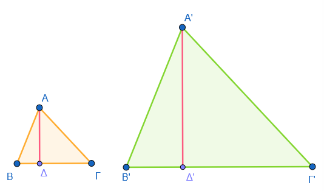
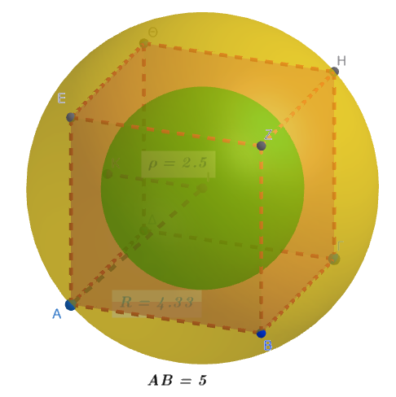
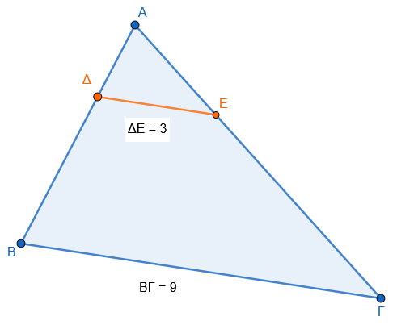
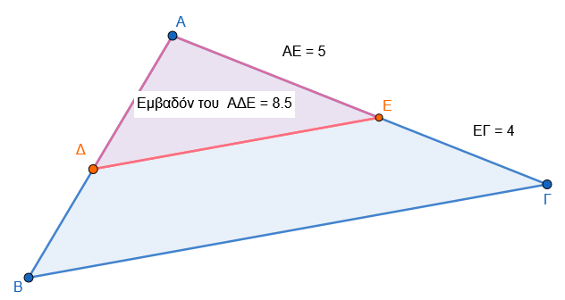
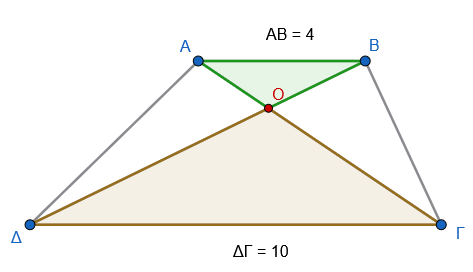
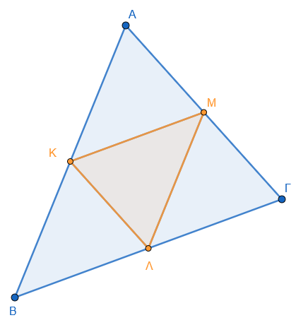
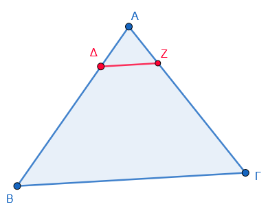
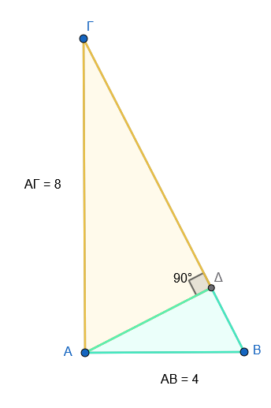
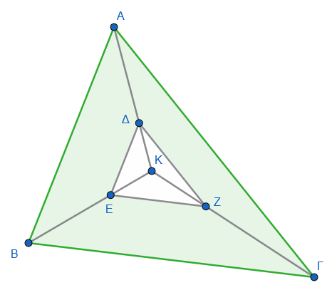

1 Λόγος εμβαδών ομοίων σχημάτων
Ο λόγος των εμβαδών δύο ομοίων σχημάτων (ή των επιφανειών ομοίων στερεών) συνδέεται άμεσα με τον λόγο ομοιότητάς τους μέσω μιας θεμελιώδους γεωμετρικής σχέσης.
1.1 Θεωρία: Ο Λόγος των Εμβαδών
1. Ορισμός Ομοιότητας και Λόγου Ομοιότητας: Γνωρίζουμε ότι δύο σχήματα (επίπεδα ή στερεά) ονομάζονται όμοια όταν το ένα είναι ή μπορεί να γίνει, με κατάλληλη μετατόπιση, ομοιόθετο του άλλου. Ο λόγος \(\lambda\) της ομοιοθεσίας αυτής ονομάζεται λόγος ομοιότητας των δύο σχημάτων. Σε δύο όμοια σχήματα, ο λόγος των αποστάσεων δύο οποιωνδήποτε σημείων του ενός προς την απόσταση των αντίστοιχων σημείων του άλλου παραμένει σταθερός και ίσος με τον λόγο ομοιότητας \(\lambda\).
2. Η Σχέση των Εμβαδών: Ο βασικός κανόνας που προκύπτει είναι ότι ο λόγος των εμβαδών δύο ομοίων σχημάτων είναι ίσος με το τετράγωνο του λόγου ομοιότητάς τους. Συμβολικά, αν \(E_1\) και \(E_2\) είναι τα εμβαδά δύο ομοίων σχημάτων και \(\lambda\) ο λόγος ομοιότητάς τους, τότε: \[\frac{E_1}{E_2} = \lambda^2\]
3. Εφαρμογή σε Τρίγωνα και Πολύγωνα:
- Τρίγωνα: Ο λόγος των εμβαδών δύο ομοίων τριγώνων ισούται με το τετράγωνο του λόγου ομοιότητας. Αυτό αποδεικνύεται από το γεγονός ότι οι αντίστοιχες βάσεις και τα αντίστοιχα ύψη τους έχουν λόγο \(\lambda\), οπότε ο τύπος του εμβαδού (\(\dfrac{1}{2} \cdot \text{βάση} \cdot \text{ύψος}\)) οδηγεί στον λόγο \(\lambda \cdot \lambda = \lambda^2\).

Απόδειξη
- Ορισμός Μεγεθών: Θεωρούμε δύο όμοια τρίγωνα ΑΒΓ και Α’Β’Γ’ με λόγο ομοιότητας \(\lambda\). Έστω \(E_1\) το εμβαδό του πρώτου και \(E_2\) το εμβαδό του δεύτερου.
- Χρήση Βάσεων και Υψών: Επιλέγουμε δύο ομόλογες βάσεις, π.χ. τις ΒΓ και Β’Γ’, και τα αντίστοιχα ύψη τους ΑΔ και Α’Δ’.
- Τύπος Εμβαδού: Το εμβαδό κάθε τριγώνου δίνεται από το ήμισυ του γινομένου της βάσης επί το αντίστοιχο ύψος:
- \(E_1 = \dfrac{1}{2} \cdot (ΒΓ) \cdot (ΑΔ)\)
- \(E_2 = \dfrac{1}{2} \cdot (Β'Γ') \cdot (Α'Δ')\)
- Σχηματισμός Λόγου: Διαιρώντας κατά μέλη τις δύο ισότητες, ο λόγος των εμβαδών γίνεται: \[\frac{E_1}{E_2} = \frac{\frac{1}{2} \cdot (ΒΓ) \cdot (ΑΔ)}{\frac{1}{2} \cdot (Β'Γ') \cdot (Α'Δ')} = \frac{ΒΓ}{Β'Γ'} \cdot \frac{ΑΔ}{Α'Δ'}\]
- Εφαρμογή Λόγου Ομοιότητας: Από τον ορισμό της ομοιότητας, ο λόγος των ομολόγων πλευρών είναι ίσος με τον λόγο ομοιότητας \(\lambda\), δηλαδή \(\dfrac{ΒΓ}{Β'Γ'} = \lambda\). Επιπλέον, ο λόγος ομοιότητας επεκτείνεται και στα αντίστοιχα δευτερεύοντα στοιχεία, όπως τα ύψη, οι διάμεσοι και οι διχοτόμοι, συνεπώς και \(\dfrac{ΑΔ}{Α'Δ'} = \lambda\).
- Τελικό Συμπέρασμα: Αντικαθιστώντας τους λόγους με το \(\lambda\), προκύπτει: \[\frac{E_1}{E_2} = \lambda \cdot \lambda = \lambda^2\]
Εναλλακτική Τριγωνομετρική Απόδειξη
Η σχέση μπορεί επίσης να αποδειχθεί χρησιμοποιώντας τον τριγωνομετρικό τύπο του εμβαδού: \(E = \dfrac{1}{2} \beta \gamma \eta\mu A\).
* Εφόσον τα τρίγωνα είναι όμοια, οι ομόλογες γωνίες τους είναι ίσες (\(A = A'\)) και οι πλευρές τους ανάλογες (\(\beta' = \lambda \beta\) και \(\gamma' = \lambda \gamma\)).
* Ο λόγος των εμβαδών γίνεται: \(\require{cancel}\dfrac{E'}{E} = \dfrac{\dfrac{1}{2} (\lambda \beta) (\lambda \gamma) \eta\mu A}{\dfrac{1}{2} \beta \gamma \eta\mu A} =\dfrac{\cancel{\dfrac{1}{2}} (λ\cancel{β}) (λ \cancel{γ}) \cancel{ημ A}}{\cancel{\dfrac{1}{2}} \cancel{β} \cancel{γ} \cancel{ημΑ}}= \lambda^2\).
- Πολύγωνα: Η ιδιότητα αυτή επεκτείνεται σε όλα τα όμοια πολύγωνα, καθώς αυτά μπορούν να αναλυθούν σε αντίστοιχα όμοια τρίγωνα.
4. Επιφάνειες Στερεών Σωμάτων: Η ίδια αρχή ισχύει και για το εμβαδό της επιφάνειας (παράπλευρης ή ολικής) ομοίων στερεών, όπως κύβοι, κύλινδροι, κώνοι και σφαίρες.
1.2 Παραδείγματα
Παράδειγμα με Σπίτια: Αν έχουμε δύο εντελώς όμοια σπίτια Α και Β, και το ύψος του σπιτιού Α είναι διπλάσιο από το ύψος του σπιτιού Β (\(\lambda=2\)), τότε η έκταση (εμβαδό) που καταλαμβάνει το σπίτι Α θα είναι τετραπλάσια (\(\lambda^2 = 2^2 = 4\)) από την έκταση του σπιτιού Β.
Παράδειγμα με Κύβους: Έστω δύο κύβοι με ακμές \(\alpha\) και \(\alpha'\). Ο λόγος ομοιότητάς τους είναι \(\lambda = \dfrac{\alpha}{\alpha'}\). Ο λόγος των ολικών επιφανειών τους (\(E=6\alpha^2\) και \(E'=6\alpha'^2\)) είναι ίσος με το τετράγωνο του λόγου ομοιότητας: \(\dfrac{6\alpha^2}{6\alpha'^2} = (\dfrac{\alpha}{\alpha'})^2 = \lambda^2\).
Υπολογισμός Εμβαδού Ομοιοθέτου Σχήματος: Αν έχουμε ένα τετράγωνο με πλευρά 8 cm και το μετασχηματίσουμε με λόγο ομοιότητας \(\lambda=3\), το νέο τετράγωνο θα έχει εμβαδό \(E' = E \cdot \lambda^2\). Δηλαδή: \((8 \cdot 8) \cdot 3^2 = 64 \cdot 9 = 576\) cm\(^2\).
Μεταβολή Διαστάσεων Πρίσματος: Αν η επιφάνεια ενός πρίσματος είναι 22 m\(^2\) και κατασκευάσουμε ένα δεύτερο όμοιο πρίσμα του οποίου οι διαστάσεις είναι το \(\dfrac{1}{2}\) των διαστάσεων του πρώτου (\(\lambda = \dfrac{1}{2}\)), τότε η επιφάνεια του νέου πρίσματος θα είναι \(22 \cdot \left(\dfrac{1}{2}\right)^2 = 22 \cdot \dfrac{1}{4} = 5,5\) m\(^2\).
Ομόλογες Ακμές Στερεών: Αν δύο ομόλογες ακμές δύο ομοίων στερεών έχουν μήκη 3 cm και 6 cm, ο λόγος ομοιότητας είναι \(\lambda = \dfrac{6}{3} = 2\). Συνεπώς, ο λόγος των εμβαδών των επιφανειών τους θα είναι \(\lambda^2 = 2^2 = 4\).
Παράδειγμα με Κύκλους
Γνωρίζουμε ότι όλοι οι κύκλοι είναι μεταξύ τους σχήματα όμοια. Ο λόγος ομοιότητας \(\lambda\) δύο κύκλων ισούται με τον λόγο των ακτίνων τους. Όπως ισχύει για όλα τα όμοια σχήματα, ο λόγος των εμβαδών τους είναι ίσος με το τετράγωνο του λόγου ομοιότητάς τους.
Έστω ότι έχουμε δύο κύκλους, τον κύκλο \(K_1\) με ακτίνα \(R_1\) και τον κύκλο \(K_2\) με ακτίνα \(R_2\).
- Υπόθεση: Ας υποθέσουμε ότι η ακτίνα του δεύτερου κύκλου είναι τριπλάσια από την ακτίνα του πρώτου (\(R_2 = 3 \cdot R_1\)).
- Λόγος Ομοιότητας: Ο λόγος ομοιότητας των δύο κύκλων θα είναι \(\lambda = \dfrac{R_2}{R_1} = 3\).
- Λόγος Εμβαδών: Ο λόγος των εμβαδών τους (\(E_1, E_2\)) θα είναι ίσος με το τετράγωνο του λόγου ομοιότητας: \[\frac{E_2}{E_1} = \lambda^2 = 3^2 = 9\]
- Συμπέρασμα: Το εμβαδό του δεύτερου κύκλου θα είναι 9 φορές μεγαλύτερο από το εμβαδό του πρώτου.
Επαλήθευση με τον τύπο του εμβαδού:
Το εμβαδό του κύκλου δίνεται από τον τύπο \(E = \pi R^2\).
* Για τον πρώτο κύκλο: \(E_1 = \pi R_1^2\).
* Για τον δεύτερο κύκλο: \(E_2 = \pi (3R_1)^2 = \pi \cdot 9R_1^2 = 9 \cdot (\pi R_1^2) = 9E_1\).
Αντίστοιχα, αν η ακτίνα ενός κύκλου διπλασιαστεί (\(\lambda=2\)), το εμβαδό του τετραπλασιάζεται (\(\lambda^2=4\)), ενώ αν η ακτίνα υποδιπλασιαστεί (\(\lambda=1/2\)), το εμβαδό γίνεται το ένα τέταρτο του αρχικού (\(\lambda^2=1/4\)).
- Παράδειγμα: Υπολογισμός Εμβαδού Ομοίου Τριγώνου
Δεδομένα:
- Έχουμε ένα τρίγωνο \(ΑΒΓ\) με εμβαδό \(E = 27\) m².
- Κατασκευάζουμε ένα νέο τρίγωνο \(Α'Β'Γ'\) το οποίο είναι όμοιο με το \(ΑΒΓ\).
- Ο λόγος ομοιότητας του νέου τριγώνου ως προς το αρχικό είναι \(\lambda = \dfrac{1}{3}\). (Αυτό σημαίνει ότι κάθε πλευρά του νέου τριγώνου είναι το \(1/3\) της αντίστοιχης πλευράς του αρχικού).
Ζητούμενο: Να βρεθεί το εμβαδό \(E'\) του τριγώνου \(Α'Β'Γ'\).
Λύση:
Βήμα 1: Εφαρμογή της θεωρίας. Γνωρίζουμε από τη γεωμετρία ότι: \[\frac{E'}{E} = \lambda^2\]
Βήμα 2: Υπολογισμός του τετραγώνου του λόγου ομοιότητας. Εφόσον \(\lambda = \dfrac{1}{3}\), τότε: \[\lambda^2 = \left(\frac{1}{3}\right)^2 = \frac{1}{9}\]
Βήμα 3: Υπολογισμός του νέου εμβαδού. Αντικαθιστούμε τις τιμές στον τύπο: \[E' = E \cdot \lambda^2\] \[E' = 27 \cdot \frac{1}{9}\] \(E' = 3\) m²
Συμπέρασμα Αν μικρύνουμε τις διαστάσεις ενός πολυγώνου κατά 3 φορές (λόγος \(1/3\)), το εμβαδό του δεν θα μειωθεί κατά 3, αλλά κατά 9 φορές (\(3^2\)), καταλαμβάνοντας έτσι το \(1/9\) της αρχικής έκτασης. Το ίδιο ισχύει για όλα τα όμοια πολύγωνα, καθώς κάθε πολύγωνο μπορεί να αναλυθεί σε αντίστοιχα όμοια τρίγωνα.
Ο λόγος των εμβαδών των επιφανειών δύο σφαιρών είναι ίσος με το τετράγωνο του λόγου ομοιότητάς τους, ο οποίος ισούται με τον λόγο των ακτίνων τους.
Θεωρητική Βάση Επειδή δύο οποιεσδήποτε σφαίρες είναι πάντα σχήματα όμοια, αν έχουν ακτίνες \(R\) και \(R'\), ο λόγος των εμβαδών τους (\(E\) και \(E'\)) προκύπτει από τον τύπο \(E = 4\pi R^2\) ως εξής: \[\frac{E}{E'} = \frac{4\pi R^2}{4\pi R'^2} = \frac{R^2}{R'^2} = \left(\frac{R}{R'}\right)^2 = \lambda^2\]
- Παράδειγμα: Εγγεγραμμένη και Περιγεγραμμένη Σφαίρα Κύβου
Ένα χαρακτηριστικό παράδειγμα υπολογισμού που προκύπτει αφορά τη σύγκριση δύο σφαιρών σε σχέση με έναν κύβο πλευράς \(\alpha = 5\) m:

Εγγεγραμμένη Σφαίρα:
- Η διάμετρος της σφαίρας ισούται με την πλευρά του κύβου (\(\alpha = 5\) m), άρα η ακτίνα της είναι \(\rho = 2,5\) m.
- Το εμβαδό της επιφάνειάς της είναι: \(E_1 = 4\pi \cdot (2,5)^2 = 25\pi\) m².
Περιγεγραμμένη Σφαίρα:
Η διάμετρος της σφαίρας ισούται με τη διαγώνιο του κύβου (\(\alpha\sqrt{3} = 5\sqrt{3}\) m), άρα η ακτίνα της είναι \(R = \dfrac{5\sqrt{3}}{2}\) m.
Το εμβαδό της επιφάνειάς της είναι: \(E_2 = 4\pi \cdot \left(\dfrac{5\sqrt{3}}{2}\right)^2 = 4\pi \cdot \dfrac{25 \cdot 3}{4} = 75\pi\) m².
Υπολογισμός Λόγου:
Ο λόγος ομοιότητας των δύο σφαιρών είναι \(\lambda = \dfrac{R}{\rho} = \dfrac{\dfrac{5\sqrt{3}}{2}}{2,5} = \sqrt{3}\).
Ο λόγος των εμβαδών τους είναι: \[\frac{E_2}{E_1} = \frac{75\pi}{25\pi} = 3\]
Επαλήθευση: Παρατηρούμε ότι \(\lambda^2 = (\sqrt{3})^2 = 3\), γεγονός που επιβεβαιώνει τη θεωρία ότι ο λόγος των εμβαδών ισούται με το τετράγωνο του λόγου ομοιότητας.
Άλλα Σύντομα Παραδείγματα
Αν διπλασιάσουμε την ακτίνα μιας σφαίρας (\(\lambda=2\)), το εμβαδό της επιφάνειάς της τετραπλασιάζεται (\(\lambda^2=4\)).
Αν ο λόγος των ακτίνων δύο σφαιρών είναι \(1/3\), τότε η μία σφαίρα έχει επιφάνεια 9 φορές μικρότερη από την άλλη.
Ο λόγος των εμβαδών δύο ομοίων κώνων είναι ίσος με το τετράγωνο του λόγου ομοιότητάς τους.
Θεωρητική Θεμελίωση
Δύο ορθοί κυκλικοί κώνοι είναι όμοιοι όταν παράγονται από όμοια ορθογώνια τρίγωνα. Αν \(R_1, R_2\) είναι οι ακτίνες των βάσεών τους και \(\lambda_1, \lambda_2\) οι γενέτειρές τους, τότε ο λόγος ομοιότητας είναι \(\mu = \dfrac{R_1}{R_2} = \dfrac{\lambda_1}{\lambda_2}\).
Λόγος Κυρτών Επιφανειών: \(\dfrac{E_{\pi 1}}{E_{\pi 2}} = \dfrac{\pi R_1 \lambda_1}{\pi R_2 \lambda_2} = \mu \cdot \mu = \mu^2\).
Λόγος Ολικών Επιφανειών: \(\dfrac{E_{o\lambda 1}}{E_{o\lambda 2}} = \mu^2\).
1. Τομή Κώνου στο Μέσον του Ύψους
Όταν ένας κώνος κόβεται από επίπεδο παράλληλο προς τη βάση του στο μέσο του ύψους του, ο νέος μικρός κώνος που σχηματίζεται στην κορυφή είναι όμοιος με τον αρχικό.
Εφόσον το επίπεδο τέμνει το ύψος στη μέση, ο λόγος ομοιότητας είναι \(\lambda = 1/2\).
Συνεπώς, το εμβαδό της ολικής επιφάνειας του μικρού κώνου θα είναι το \(1/4\) (\(\lambda^2 = (1/2)^2 = 1/4\)) της επιφάνειας του αρχικού κώνου. Αν, για παράδειγμα, ο αρχικός κώνος έχει ολική επιφάνεια \(282,60 \text{ cm}^2\), ο μικρός θα έχει \(70,65 \text{ cm}^2\).
2. Υπολογισμός Διαστάσεων μέσω Λόγου Εμβαδών
Έστω ένας κώνος με ακτίνα \(R=3 \text{ m}\) και ύψος \(h=4 \text{ m}\) (άρα γενέτειρα \(L=5 \text{ m}\)). Ζητείται η γενέτειρα ενός όμοιου κώνου, του οποίου η παράπλευρη επιφάνεια (\(E_{\pi2}\)) είναι ίση με την ολική επιφάνεια του πρώτου (\(E_{o\lambda1}\)).
Η ολική επιφάνεια του πρώτου κώνου είναι \(E_{o\lambda1} = \pi \cdot 3 \cdot (5+3) = 24\pi\).
Για τον δεύτερο (όμοιο) κώνο, αν \(\kappa\) είναι ο λόγος ομοιότητας, η παράπλευρη επιφάνειά του θα είναι \(E_{\pi2} = \kappa^2 \cdot (\pi R L) = \kappa^2 \cdot \pi \cdot 3 \cdot 5 = 15\pi \kappa^2\).
Εξισώνοντας τις επιφάνειες: \(15\pi \kappa^2 = 24\pi \Rightarrow \kappa^2 = 24/15 = 1,6\).
Ο λόγος των εμβαδών είναι \(1,6\), άρα ο λόγος ομοιότητας είναι \(\kappa = \sqrt{1,6}\).
Η νέα γενέτειρα θα είναι \(y = 5 \cdot \sqrt{1,6} \approx 6,324 \text{ m}\).
3. Λόγος Επιφανειών και Ακτίνων
Αν ο λόγος των ακτίνων δύο ομοίων κώνων είναι \(\mu\), τότε ο λόγος των κυρτών επιφανειών τους είναι \(\mu^2\). Για παράδειγμα, αν διπλασιάσουμε όλες τις διαστάσεις ενός κώνου (\(\mu=2\)), η επιφάνειά του θα τετραπλασιαστεί (\(\mu^2=4\)).
2 Ασκήσεις
Αν έχουμε δύο όμοια σχήματα και η πλευρά του δεύτερου είναι διπλάσια (\(2\) φορές μεγαλύτερη) από την πλευρά του πρώτου, πόσες φορές μεγαλύτερο θα είναι το εμβαδόν του;
Αν ο λόγος ομοιότητας δύο σχημάτων είναι \(k = 3\), ποιος είναι ο λόγος των εμβαδών τους;
Αν το εμβαδόν ενός μεγάλου τετραγώνου είναι \(16\) φορές μεγαλύτερο από το εμβαδόν ενός μικρότερου, πόσες φορές μεγαλύτερη είναι η πλευρά του;
Έχουμε δύο όμοια τρίγωνα. Αν το πρώτο έχει πλευρά \(2 \text{ cm}\) και το δεύτερο \(6 \text{ cm}\), ποιος είναι ο λόγος των εμβαδών τους;
Ισχύει ο ίδιος κανόνας για τους κύκλους; Αν η ακτίνα ενός κύκλου τριπλασιαστεί, τι θα συμβεί στο εμβαδόν του;
Αν ο λόγος των εμβαδών δύο ομοίων σχημάτων είναι \(\dfrac{4}{25}\), ποιος είναι ο λόγος των αντίστοιχων πλευρών τους;
Αν ένα σχήμα έχει εμβαδόν \(10 \text{ cm}^2\) και το μεγεθύνουμε με λόγο \(k = 5\), ποιο θα είναι το νέο εμβαδόν;
Δύο όμοια ορθογώνια έχουν λόγο περιμέτρων \(\dfrac{1}{2}\). Ποιος είναι ο λόγος των εμβαδών τους;
Αν μειώσουμε όλες τις πλευρές ενός σχήματος στο μισό (\(\dfrac{1}{2}\)), πόσο θα γίνει το εμβαδόν του;
Γιατί ο λόγος των εμβαδών είναι το τετράγωνο του λόγου των πλευρών;
Λόγος ομοιότητας και εμβαδά: Αν ο λόγος ομοιότητας δύο σχημάτων είναι \(\lambda = 0,75\), ποιος είναι ο λόγος των εμβαδών τους;
Αντίστροφος υπολογισμός: Αν ο λόγος των εμβαδών δύο ομοίων τριγώνων είναι \(1/9\), ποιος είναι ο λόγος ομοιότητας \(\lambda\);
Ομόλογες ακμές στερεών: Δύο όμοια στερεά έχουν ομόλογες ακμές \(3\text{ cm}\) και \(6\text{ cm}\). Βρείτε το λόγο των εμβαδών των επιφανειών τους.
Κύβος και εμβαδό έδρας: Ένας κύβος (Κ) είναι όμοιος με κύβο (Κ’) πλευράς \(6\text{ cm}\). Αν το εμβαδό μιας έδρας του (Κ) είναι \(9\text{ cm}^2\), βρείτε το λόγο ομοιότητας \(\lambda\).
Τρίγωνο και βαρύκεντρο: Τρίγωνο έχει εμβαδό \(27\text{ m}^2\). Αν από το βαρύκεντρο φέρουμε παράλληλη στη βάση, υπολογίστε το εμβαδό του μικρού τριγώνου που σχηματίζεται στην κορυφή.
Τομή πυραμίδας στο μέσο: Επίπεδο παράλληλο στη βάση τέμνει το ύψος πυραμίδας στο μέσο του. Ποιος είναι ο λόγος της ολικής επιφάνειας της μικρής πυραμίδας προς την αρχική;
Παράδειγμα ομοίων σπιτιών: Αν το ύψος του σπιτιού Α είναι διπλάσιο από το ύψος του πανομοιότυπου σπιτιού Β, πόσες φορές μεγαλύτερη είναι η έκταση που καταλαμβάνει το σπίτι Α;
Επιφάνειες κυλίνδρων: Δύο όμοιοι κύλινδροι έχουν λόγο ακτινών \(\lambda\). Δείξτε ότι ο λόγος των ολικών τους επιφανειών είναι επίσης \(\lambda^2\).
Σφαίρες και ακτίνες: Αν η ακτίνα μιας σφαίρας τριπλασιαστεί, πόσες φορές αυξάνεται το εμβαδό της επιφάνειάς της;
Όμοια πρίσματα: Δύο όμοια τριγωνικά πρίσματα έχουν λόγο ομολόγων ακμών \(4:7\). Βρείτε το λόγο των επιφανειών τους.
Κύβος και λόγος πλευρών: Αν ο λόγος των πλευρών δύο κύβων είναι \(2/3\), βρείτε το λόγο των εμβαδών των εδρών τους.
Τομή κώνου στο μέσο: Ένας κώνος έχει ολική επιφάνεια \(282,60\text{ cm}^2\). Ποιο είναι το εμβαδό της ολικής επιφάνειας του μικρού κώνου που προκύπτει αν τον κόψουμε παράλληλα στη βάση στο μέσο του ύψους του;
Κανονικά πολύγωνα: Δύο κανονικά πεντάγωνα έχουν λόγο πλευρών \(5\). Ποιος είναι ο λόγος των εμβαδών τους;
Υπολογισμός λόγου ομοιότητας: Αν ο λόγος των εμβαδών δύο ομοίων κώνων είναι \(1,6\), ποιος είναι ο λόγος των γενετειρών τους;
Σφαίρα εγγεγραμμένη σε κύβο: Βρείτε το λόγο της επιφάνειας μιας σφαίρας προς την επιφάνεια του περιγεγραμμένου σε αυτή κύβου (όπου η ακμή του κύβου ισούται με τη διάμετρο της σφαίρας).
Τριπλασιασμός ακμής κύβου: Πώς μεταβάλλεται το εμβαδό της ολικής επιφάνειας ενός κύβου αν τριπλασιάσουμε την πλευρά του;
Εύρεση ομόλογης ακμής: Μια πυραμίδα έχει πλευρά \(10\text{ cm}\). Ποια είναι η ομόλογη ακμή μιας όμοιας πυραμίδας αν η δεύτερη έχει διπλάσια επιφάνεια;
Κύλινδροι και ακτίνες: Αν ο λόγος των ολικών επιφανειών δύο ομοίων κυλίνδρων είναι \(16\), ποιος είναι ο λόγος των ακτινών τους;
Προσδιορισμός θέσης τομής κώνου: Σε ποιο σημείο του ύψους πρέπει να τμηθεί ένας κώνος παράλληλα προς τη βάση του, ώστε η κυρτή επιφάνεια του μικρού κώνου να είναι το \(1/4\) της αρχικής;
Σχέση όγκου και επιφάνειας: Αν ο λόγος των όγκων δύο ομοίων στερεών είναι \(8\), ποιος είναι ο λόγος των επιφανειών τους;
Στο παρακάτω σχήμα είναι \(\Delta \text{E} // \text{B}\Gamma\). Αν \(ΔΕ = 3 \text{ cm}\) και \(ΒΓ = 9 \text{ cm}\), να υπολογίσετε το λόγο των εμβαδών \(\frac{(\text{A}\Delta\text{E})}{(\text{AB}\Gamma)}\).

Στο παρακάτω σχήμα είναι \(\Delta \text{E} // \text{B}\Gamma\). Αν η πλευρά \(ΑΕ = 5 \text{ cm}\) και η \(ΕΓ = 4 \text{ cm}\), και το εμβαδόν του μικρού τριγώνου \((\text{A}\Delta\text{E})\) είναι \(8,5 \text{ cm}^2\), να βρείτε το εμβαδόν του τριγώνου \((\text{AB}\Gamma)\).

Σε τραπέζιο \(ΑΒΓΔ\) με βάσεις \(ΑΒ = 4 \text{ cm}\) και \(ΓΔ = 10 \text{ cm}\), οι διαγώνιες \(ΑΓ\) και \(ΒΔ\) τέμνονται στο \(Ο\). Πόσες φορές το εμβαδόν του τριγώνου \(ΟΓΔ\) είναι μεγαλύτερο από το εμβαδόν του τριγώνου \(ΟΑΒ\);

Αν \(\text{K}, \Lambda, \text{M}\) είναι τα μέσα των πλευρών \(\text{AB}, \text{B}\Gamma, \Gamma\text{A}\) ενός τριγώνου \(\text{AB}\Gamma\) αντιστοίχως, να υπολογίσετε τους λόγους:
α) \(\dfrac{(\text{AKM})}{(\text{AB}\Gamma)}\)
β) \(\dfrac{(\text{K}\Lambda\text{M})}{(\text{AB}\Gamma)}\)

Έστω τρίγωνο \(ΑΒΓ\) με εμβαδόν \(\text{E}\). Αν πάρουμε σημείο \(Δ\) στην \({AB}\) τέτοιο ώστε \(AΔ = \dfrac{1}{4} {AB}\) και φέρουμε \(ΔΖ // ΒΓ\), να αποδείξετε ότι το εμβαδόν \(\text{E}_1\) του τριγώνου \(ΑΔΖ\) είναι \(\text{E}_1 = \dfrac{1}{16} \text{E}\).

Σε ορθογώνιο τρίγωνο \(ΑΒΓ\) (\(\hat{\text{A}} = 90^{\circ}\)) με κάθετες πλευρές \({AB} = 4 \text{ cm}\) και \(ΑΓ = 8 \text{ cm}\), φέρνουμε το ύψος \(ΑΔ\) προς την υποτείνουσα. Να βρείτε τον λόγο των εμβαδών \(\dfrac{(\text{AB}\Delta)}{(\text{A}\Gamma\Delta)}\).

Στο εσωτερικό τριγώνου \(ΑΒΓ\) παίρνουμε σημείο \({Κ}\). Αν \(Δ,\ Ε, \ Z\) είναι τα σημεία πάνω στα τμήματα \({ΚA}, \ {ΚB}, \ {ΚΓ}\) τέτοια ώστε \(ΚΔ = \dfrac{1}{3} {ΚA}, \ {ΚE} = \dfrac{1}{3} {ΚB}\) και \({ΚZ} = \dfrac{1}{3} {ΚΓ}\), να βρείτε:
α) το λόγο των εμβαδών \(\dfrac{(ΔΕΖ)}{(ΑΒΓ)}\).
β) Αν το εμβαδόν του ΑΒΓ είναι \(54 \ cm^2\) , να βρείτε το εμβαδόν του πράσινου χωρίου.

Ένα τετράγωνο έχει εμβαδόν \(100 \text{ cm}^2\). Να βρείτε το νέο εμβαδόν αν γίνει:
α) Μεγέθυνση κατά \(150\%\)
(δηλαδή ο λόγος ομοιότητας γίνεται \(1,5\)).
β) Σμίκρυνση κατά \(80\%\)
(δηλαδή ο λόγος ομοιότητας γίνεται \(0,8\)).
- Αν η πλευρά ενός ισόπλευρου τριγώνου αυξηθεί κατά \(20\%\), να βρείτε πόσο τοις εκατό (\(\%\)) θα αυξηθεί το εμβαδόν του.
Λύση
- Βήμα 1: Βρίσκουμε τον λόγο ομοιότητας (\(k\))
Όταν λέμε ότι η πλευρά αυξάνεται κατά \(20\%\), σημαίνει ότι αν η παλιά πλευρά ήταν \(100\%\), η νέα πλευρά θα είναι \(100\% + 20\% = 120\%\).
Σε δεκαδική μορφή, το \(120\%\) το γράφουμε ως \(1,2\). Άρα ο λόγος ομοιότητας των πλευρών είναι: \[k = 1,2\]
- Βήμα 2: Βρίσκουμε τον λόγο των εμβαδών (\(k^2\))
Όπως μάθαμε, ο λόγος των εμβαδών είναι το τετράγωνο του λόγου των πλευρών. Δηλαδή, πρέπει να πολλαπλασιάσουμε το \(k\) με τον εαυτό του: \[k^2 = 1,2 \cdot 1,2\]
Ας κάνουμε την πράξη: \[k^2 = 1,44\]
Αυτό σημαίνει ότι το νέο εμβαδόν είναι \(1,44\) φορές μεγαλύτερο από το παλιό.
- Βήμα 3: Μετατρέπουμε τον λόγο σε ποσοστό (\(\%\)) Το \(1,44\) ως ποσοστό είναι το \(144\%\).
Για να βρούμε πόσο αυξήθηκε το εμβαδόν, αφαιρούμε το αρχικό εμβαδόν (\(100\%\)): \[144\% - 100\% = 44\%\]
- Τελική Απάντηση: Το εμβαδόν του τριγώνου θα αυξηθεί κατά \(44\%\).
- Οι διαστάσεις ενός ορθογωνίου μειώθηκαν κατά \(10\%\). Να υπολογίσετε το ποσοστό \((\%)\) μείωσης του εμβαδόν του ορθογωνίου.
\[\bbox[yellow, 5px]{\color{blue}\Large\text{---}}\]
ΚΑΛΗ ΜΕΛΕΤΗ!